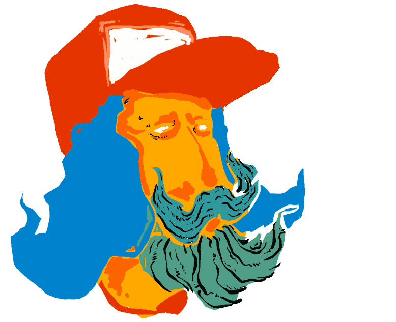

AKLINDAN TUT MORUK
bir eşya tut, evet-hayırla bulayım
Aklından bir eşya tut. Evdeki, mutfaktaki, sokaktaki… ne olursa.

Listemde olmayan bir şey tuttuysan ana sayfadaki panoya yaz, oyuna eklerim.
bir eşya tut, evet-hayırla bulayım

Listemde olmayan bir şey tuttuysan ana sayfadaki panoya yaz, oyuna eklerim.